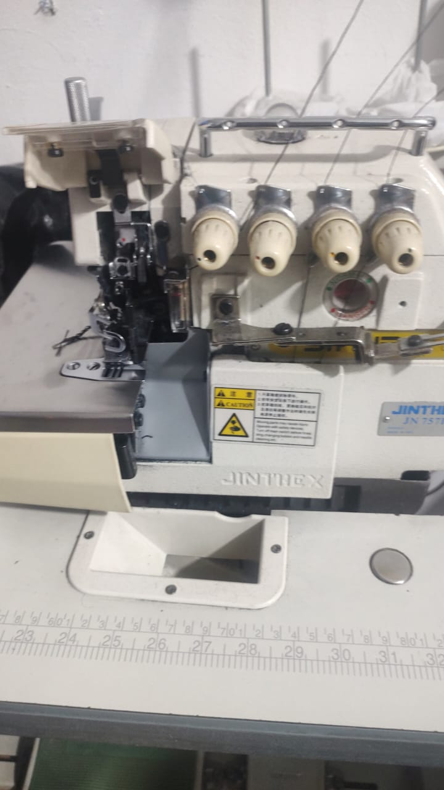

Mi Gestacion
Mi mamá, una mujer de campo la cual se vino a la gran ciudad de Bogotá, para encontrar un mejor futuro, su nombre es María Etelvina Silvia Daza, quien nace en una familia humilde en Guacamayas Boyacá.
Mi papá, Carlos Julio Garzón Bautista, un hombre de ciudad un Rolo de pura cepa. Quien al igual que mi querida madre nece de una familia humilde.
Ellos se conocen en una fiesta se enamoran y de ahí forman una familia de tres hijos.
Infancia
A mi parecer tuve una buena infancia, pues estuve rodeado de seres que me querían y me daban su apoyo y amor en las cosas que hacía. Eso hizo que mi creatividad sobresaliera, cosa que hoy en día es de las cosas que más me caracterizan. Recuerdo agarra tarros de pintura y ponerme a pintar, valga la redundancia; también me gustaba mucho bailar y brincar; y no podemos dejar a un lado cantar y la música en general. Odiaba leer me parecía la cosa más aburrida del mundo, por el contrario amaba ver mucha TV.
Adolescencia
Mi principal actividad era ver TV, no hacía más que eso y además salía con amigos a “hecha Xbox” como diramos los jóvenes. Pero eso solo fue hasta que perdí dos años y tuve que ponerme la pilas, lo cual fue de gran provecho pues logré pasar en limpio dos años segidos. Ahora soy totalmente diferente pues amo leer; soy más disciplinado; me va mejor en la escuela; soy mucho más sociable que antes y eso sin dudas es de lo mejor que me pudo hacer pasado, pues no me da pena a hablar en público (pues me he lanzado al consejo estudiantil siempre que puedo) también amo dibujar más que antes.

Como me veo en el futuro
Mi sueño es poder estudiar diseño de moda, pues yo trabajo en una sastrería, ya he hecho prendas de vestir como un gaban hasta la camiseta del colegio. Me veo montando mi propia casa de moda, pues sé que tengo lo que se necesita la pasión, pues le meto el alma a lo que me gusta; la creatividad, que desde pequeño le he explotado al máximo; las ganas de aprender entre otras. Yo sé que lo puedo conseguir pues el ser pesimista no va conmigo.
